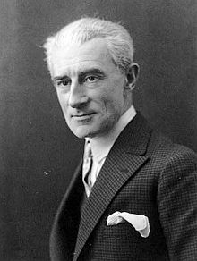
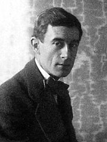

Joseph Maurice Ravel
Joseph Maurice Ravel (n. 7 martie 1875, Ciboure - d. 28 decembrie 1937, Paris) a fost un compozitor francez impresionist, celebru mai ales datorită muzicii de balet pentru orchestră în Do major Boléro, compusă în 1928, una din ultimele piese compuse înainte ca boala să-l condamne la tăcere.
La începutul secolului al XX personalitatea puternică a dirijorului și compozitorului M. Ravel s-a impus în lumea muzicală prin interpretări artistice și prin noutatea lucrărilor sale muzicale cu rafinate sonorități impresioniste și un pronunțat colorit folcloric. Pianist remarcabil dedică primele sale lucrări acestui instrument: menuet antic, habanera, pavană pentru o infantă moartă: dovedind o înclinație deosebită pentru dans; de la dansul din epoca barocului pană la cel modern: vals, foxtrot dar și pentru blues. Ravel reînvie spiritul clasic francez în sonatină pentru pian și în suita preclasică Mormântul lui Couperin.
Cea mai populară creație a sa simfonică este BOLEROUL - conceput pe un ritm ostinat care persistă pană la sfârșitul lucrării. Ravel expune la flaut o amplă melodie alcătuită din 2 perioade muzicale după care reluând mereu aceeași linie melodică îi suprapune succesiv câte un instrument la cvartă și octavă. Rezultatul este persistența accentelor melodiei care la fiecare reluare modificându-se efectul timbrar, crește ca intensitate. Sedus de muzica orientală compune pentru voce și pian diferite melodii incluse in cicluri: * 5 melodii grecești, * 2 melodii ebraice, * 3 cântece din madagascar ,* 3 cântece ale lui Don Quijote, *7 cântece populare, * ciclul de lieduri Istorile Naturale.
Ravel ne-a lăsat valoroase lucrări în genul muzicii de cameră : *Trio în la minor, *Cvartetul de coarde în Fa major , *Sonata pentru vioară și pian, *Sonata pentru vioară și violoncel, * Sonata pentru vioară si orchestra * Rapsodia - TZIGANE - de o mare dificultate tehnică cu un caracter strălucitor. A scris 2 concerte instrumentale:
Pian și Orchestră în Re major pentru mâna stângă.
Pian și orchestră în Sol major. Marea sa varietate ritmică izvorăște din diferite surse folclorice și din particularitățile dansurilor care l-au inspirat; de la vechea pavană până la ritmurile moderne.

